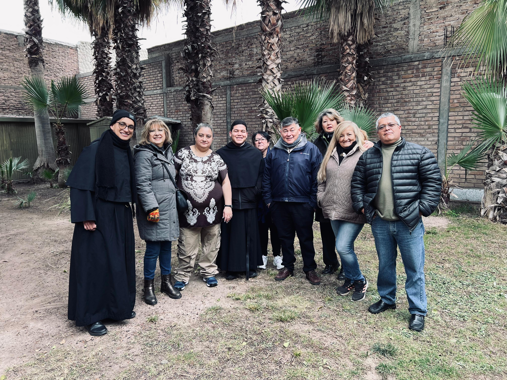
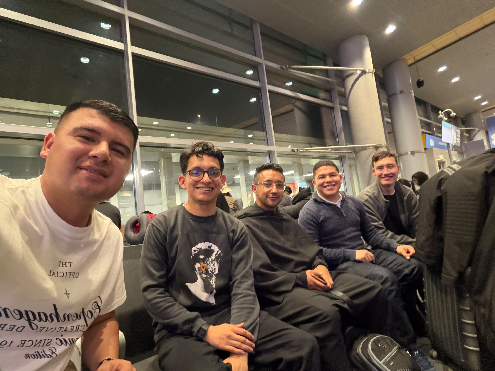
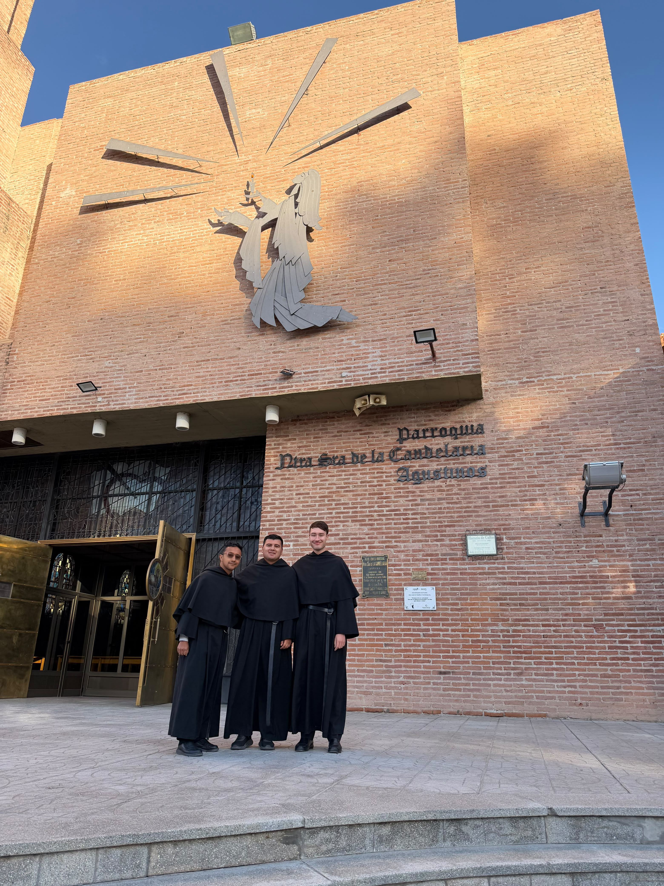

Un saludo a todos.
El 1 de julio salimos de Bogotá con destino a Argentina. Al llegar a Buenos Aires, los hermanos enviados a Mendoza continuaron su viaje, mientras que el P. fray Christian, fray Jhonatan y yo nos dirigimos a Salta. Tras pasar una noche allí, en casa de los hermanos, el 3 de julio llegamos a Santa María, en la provincia de Catamarca.
Una misión en el corazón del Valle Calchaquí
Santa María es un pequeño pueblo rodeado de enormes montañas, viñedos y bodegas de vino, donde el clima es bastante frío, aunque los días son siempre soleados.
- Misión
- Fraternidad
- Encuentro
Una comunidad que recibe y acompaña
Fuimos recibidos por la comunidad agustiniana de la parroquia Nuestra Señora de la Candelaria, integrada por el P. Javier Pinto, de nuestra provincia de Colombia, y el P. José Guillermo, párroco del lugar. Los padres españoles Nicanor y Antonio, que viven aquí, están ahora ausentes.
Durante este tiempo, el P. Christian ha colaborado celebrando la Santa Misa y escuchando confesiones tanto en el templo como en las comunidades y capillas que dependen de la parroquia. Los profesos hemos acompañado estas actividades, compartiendo con los grupos parroquiales, visitando familias y encontrándonos con las hermanas agustinas misioneras.
«Pienso que la misión no es únicamente hacia afuera, también hay misión para con los propios hermanos: sabemos que la visita de sus compatriotas ha sido un apoyo fraterno de gran valor para el P. Javier».



La huella agustiniana permanece viva
También hemos tenido la oportunidad de conocer los bellos paisajes desérticos de la región, así como la profunda huella agustiniana que permanece en esta prelatura. Sus obras, aunque hoy en gran parte ya no están a cargo de la Orden por la escasez de frailes, conservan viva su identidad y herencia.
El camino continúa
Si Dios así lo quiere, el P. Christian regresará a Buenos Aires el 22 de julio; nosotros lo haremos el 28 para reunirnos con los hermanos de Mendoza y regresar juntos a Colombia el 31 de julio.
Nos confiamos a su oración:
P. fray Christian, fray Jhonatan y fray Sebastián.
La misión en imágenes
Compartimos este video como cierre del testimonio y memoria del camino vivido en comunidad.